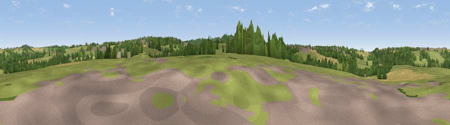

Viewpoint near Illogan
#41554 in England · top 91% of its area beats it · near IlloganWhere it is
The exact computed spot (SW 68625 44025). Click the marker for map links.
The view, rendered

A 360° render of this exact spot computed from the terrain model, tree cover and land cover — summer colours, afternoon light, calibrated against photographs of famous viewpoints. Real trees, hedges and buildings will differ in detail.
The panorama
Grey silhouette: terrain skyline in each direction (720 bearings, Earth curvature and refraction included). Dashed green: skyline with trees (+15 m) and buildings (+8 m) as obstacles. Blue strip: how far the ground is visible on each bearing.
Where the view opens
Wedge length = distance to the farthest visible ground on that bearing (vegetation-aware). Rings at 10, 25 and 50 km.
What fills the view
53% grassland · 25% woodland · 16% cropland · 6% built-up
Angular shares of the visible panorama (visual magnitude), not map area. Landscape diversity 0.50 (0–1 Shannon).
Key numbers
More beautiful places nearby
The staircase of upgrades: each row has a higher view potential than everything closer. Driving times are estimates from straight-line distance, calibrated against real road routing — check an actual route before setting out.
| Place | Direction | Drive | Score |
|---|---|---|---|
| Viewpoint near Redruth | ESE · 3 km | ~7 min | 69.1 |
| Carn Brea | S · 3 km | ~8 min | 81.1 |
| St Agnes Beacon | NNE · 7 km | ~14 min | 86.1 |
| Rosewall Hill | WSW · 20 km | ~34 min | 88.0 |
| Viewpoint near Combe Martin | NE · 138 km | ~162 min | 88.9 |
| Holdstone Hill | NE · 139 km | ~163 min | 90.2 |
| The Knoll | ENE · 189 km | ~209 min | 91.0 |
50.25080, -5.24695 · source: screening · position refined by local search. Computed location — check access rights before visiting.